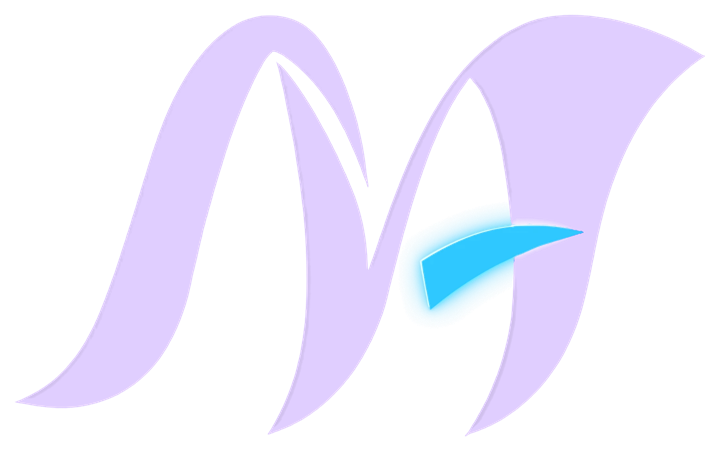

Personal project · in progress
Ask Mónica
not a portfolio, a conversation
Pick a question and read my answer. If you like what you read, further down there is a page about working with me.
Ask me something
five questions, my answers
Pick a question to begin.
Work with me
UX/UI, prototypes and a plan to get there
-
Main service
UX/UI and prototyping
I structure the flow of an idea into an interactive prototype in Figma, validate it with usability testing and turn what I observe into concrete recommendations, so you can see your idea in action before investing in development.
-
Second service
Coordination and planning of interactive projects
The execution plan, the timeline and each person's responsibilities, followed through to delivery.
How a project with me goes
- Break the idea into deliverablesWhat exactly has to exist at the end, and who owns each piece.
- Plan itAn execution plan, a timeline and checklists for the final delivery.
- Prototype and testAn interactive prototype in Figma, tested with real people.
- DeliverRecommendations you can act on, and the pitch to present them.
What you can expect from me
- I turn ideas into deliverablesExecution plan, timeline, delivery checklists and a pitch outline.
- I use AI with critical thinkingI understand the logic of the topic first, then decide where, why and how to use AI.
- Persistence and self-directed researchWhen I don't know something, I research until I know how to reach the goal.
- I organise and lead teamsI coordinate, delegate, spot gaps early and question the design decisions being made.
- Rigour and honestyI analyse data critically and say clearly what it can and cannot show.
- I make complex ideas clearI think from the point of view of the average person, not only of the people who master the technical side.
Draft · to be written by me
What I won't compromise on, and one thing I'd like a team to know before we start. I will write this section myself.